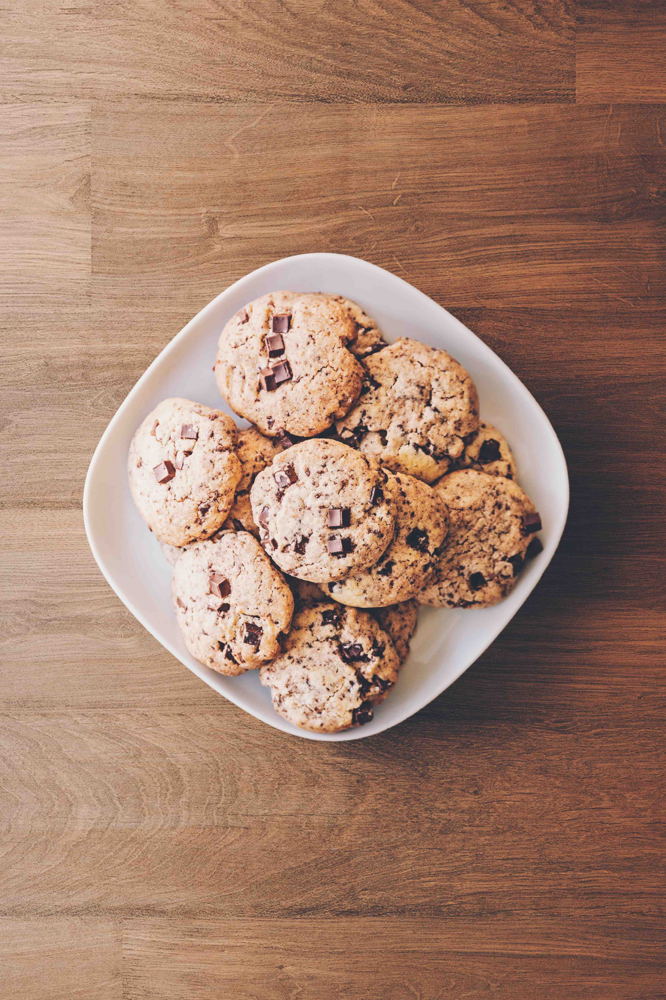

Chocolate Chip Cookie Recipe
(Toll House Recipe)
MSU Website
Photo Credit: Oleg Magni, Pexels

Ingredients
- 2 ¼ cups flour
- 1 teaspoon baking soda
- 1 teaspoon salt
- 1 cup butter (2 sticks)
- ¾ cup brown sugar
- 1 teaspoon Vanilla
- 2 eggs
- 2 cups chocolate chips
- 1 cup nuts
Directions
- Place half of the ingredients in the order they are listed in a large bowl.
- Mix thoroughly.
- Place the remaining ingredients in the bowl and mix.
- Scoop the dough into separate balls with a tablespoon.
- Place the cookie dough balls on a greased pan with enough room between for the dough to settle.
- Preheat the oven to 350°.
- Place the pan in the oven for 20 – 25 mins.